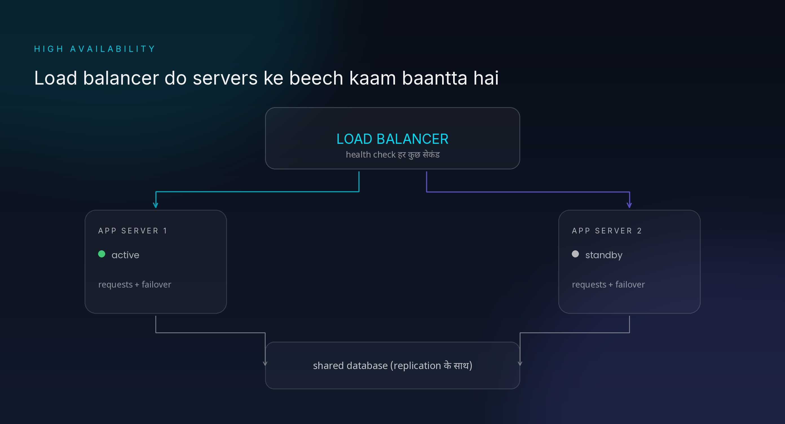

Server Cluster Kya Hai? HA, Load Balancing aur Failover Guide
जब किसी website का traffic बढ़ता है, तो सबसे पहला सुझाव आता है — "server बढ़ा दो"। पर दूसरा server जोड़ने से अपने आप कुछ नहीं होता। उसे traffic बाँटना, उसकी निगरानी करना, और एक के बंद होने पर दूसरे को संभालना सिखाना पड़ता है। यही पूरी व्यवस्था server cluster कहलाती है।
इस आर्टिकल में मैं बताऊँगा कि server cluster क्या है और कितने प्रकार के होते हैं, high availability कैसे बनती है, load balancer किस तरह काम बाँटता है, active-passive और active-active में क्या फर्क है, shared storage और database replication का क्या रोल है, cluster बनाने के छह कदम कौन से हैं, और कहाँ यह पूरा setup ज़रूरत से ज़्यादा महंगा साबित होता है।
छोटा जवाब: server cluster कई servers का समूह है जो मिलकर एक सेवा चलाते हैं। इसमें एक load balancer traffic बाँटता है, servers एक जैसी state रखते हैं, और health check के ज़रिए खराब server को बाहर कर दिया जाता है। इसका मकसद uptime बढ़ाना और एक server की क्षमता से ज़्यादा load संभालना है।
Server cluster kya hai
Cluster का मतलब है ऐसे servers का समूह जो उपयोगकर्ता को एक ही सेवा की तरह दिखते हैं। उपयोगकर्ता को यह जानने की ज़रूरत नहीं कि उसकी request किस server पर गई — उसे सिर्फ जवाब चाहिए।
यह समूह तीन काम करता है। पहला, काम बाँटना ताकि एक server पर बोझ न पड़े। दूसरा, एक के बंद होने पर दूसरे का काम संभालना। तीसरा, ज़रूरत पड़ने पर नए server जोड़कर क्षमता बढ़ाना। इन तीनों में से कोई एक भी न हो, तो वह सिर्फ "कई servers" है, cluster नहीं।
Cluster ke chaar aam prakar
- High availability cluster — मकसद uptime है; एक server बंद हो तो दूसरा तुरंत काम ले ले।
- Load balancing cluster — मकसद क्षमता है; traffic कई servers में बँटता है।
- Storage cluster — data को कई nodes पर रखकर सुरक्षित और उपलब्ध रखना।
- Compute cluster — भारी गणना को कई machines में बाँटना, जैसे rendering या training।
असली setups में ये मिले-जुले होते हैं। एक ही cluster availability और capacity दोनों के लिए बनाया जाता है, और उसके नीचे storage अलग से replicated रहता है।
Cluster aur single server me farq
एक server पर सब कुछ चलाना सस्ता और सरल है, पर उसकी सीमा साफ है — वह जितना संभाल सकता है, उतना ही। और जब वह बंद होता है, सब बंद होता है। Cluster इन दोनों सीमाओं को तोड़ता है, पर अपने साथ जटिलता लाता है।
High availability kaise banti hai
High availability का मतलब यह नहीं कि कुछ बंद ही नहीं होगा। मतलब यह है कि बंद होने पर सेवा रुकेगी नहीं। इसे तीन चीज़ों से बनाया जाता है — redundancy, health check और automatic failover।
Redundancy का मतलब है हर ज़रूरी हिस्से की एक से ज़्यादा प्रति। Health check का मतलब है यह पता लगाना कि कौन सा हिस्सा ठीक है। Automatic failover का मतलब है खराब हिस्से को हटाकर काम दूसरे को देना, बिना किसी के फोन करने का इंतज़ार किए।
SPOF: सबसे पहले यही ढूँढें
SPOF यानी single point of failure — वह एक हिस्सा जिसके बंद होने से पूरा system रुक जाए। अक्सर लोग servers को redundant कर देते हैं पर load balancer, database या DNS को भूल जाते हैं।
इसलिए शुरुआत में एक कागज़ पर पूरा रास्ता लिखें — उपयोगकर्ता से DNS, load balancer, application server, database, storage और backup तक। हर जगह पूछें: "अगर यह बंद हो जाए तो क्या होगा?" जहाँ जवाब "सब रुक जाएगा" हो, वही आपका पहला काम है।

Load balancer kaise kaam karta hai
Load balancer सामने खड़ा होकर requests लेता है और उन्हें पीछे के servers तक पहुँचाता है। यह दो स्तरों पर काम कर सकता है — network स्तर पर (L4) जहाँ वह IP और port देखता है, और application स्तर पर (L7) जहाँ वह HTTP path, header और cookie देख सकता है।
| तरीका | कैसे बाँटता है | कब ठीक है |
|---|---|---|
| Round robin | बारी-बारी से हर server | सब servers एक जैसे हों |
| Least connections | जिस पर सबसे कम कनेक्शन हों | requests का समय बदलता हो |
| IP hash | एक उपयोगकर्ता हमेशा एक server पर | session server पर स्टोर हो |
| Weighted | ताकत के हिसाब से हिस्सा | servers अलग क्षमता के हों |
सबसे ज़रूरी सवाल यह है कि session कहाँ रहेगा। अगर login की जानकारी एक server की memory में है और अगली request दूसरे server पर चली गई, तो उपयोगकर्ता बार-बार logout होगा। इसका हल यह है कि session को shared store (जैसे Redis) में रखें, या load balancer में sticky session चालू करें। पहला विकल्प ज़्यादा टिकाऊ है।
Health check कैसे तय करता है
Load balancer हर कुछ सेकंड में servers से एक छोटा सवाल पूछता है, जैसे /health। जवाब न आए या गलत आए, तो वह server सूची से हट जाता है। जब वह फिर ठीक हो जाए, तो वापस जुड़ जाता है।
यह endpoint सिर्फ "process चल रहा है" नहीं बताना चाहिए, बल्कि "app काम करने लायक है" भी बताना चाहिए — database कनेक्शन सहित। वरना ऐसे server को traffic मिलता रहेगा जो हर request पर error देगा।
Failover: active-passive aur active-active
Failover का मतलब है खराब हुए हिस्से की जगह दूसरे का काम लेना। इसके दो मुख्य तरीके हैं।
Active-passive में एक server काम करता है और दूसरा तैयार खड़ा रहता है। खराबी पर दूसरा काम ले लेता है। इसे संभालना आसान है, पर आधा hardware बिना काम के बैठा रहता है।
Active-active में दोनों servers काम करते हैं और load बँटता है। खराबी पर बचा हुआ पूरा load संभालता है। यह किफायती है, पर state को दोनों के बीच साझा रखना पड़ता है — और यहीं सबसे ज़्यादा गलतियाँ होती हैं।
| पहलू | Active-passive | Active-active |
|---|---|---|
| संसाधन का उपयोग | कम, एक server खाली | पूरा |
| जटिलता | कम | ज़्यादा — state साझा करना पड़ता है |
| Failover का समय | थोड़ा ज़्यादा | कम, अगर सब ठीक से बना हो |
| किसके लिए ठीक | Database, पुराने apps | Stateless web services |
Shared storage aur database replication
Application servers को stateless रखना आसान है — उनके पास अपना data न हो, सब कहीं से आए। पर database के साथ यही काम मुश्किल हो जाता है, क्योंकि data एक जगह लिखा जाता है।
दो सामान्य रास्ते हैं। पहला, primary-replica — एक database लिखता है, बाकी पढ़ते हैं और उसकी प्रति रखते हैं। दूसरा, shared storage — दोनों servers एक ही disk देखते हैं, पर तब locking और performance का हिसाब जटिल हो जाता है।
तीसरा रास्ता managed database है, जहाँ provider replication और failover संभालता है। छोटी टीम के लिए यह अक्सर सबसे समझदार चुनाव होता है, क्योंकि database की high availability खुद बनाना आसान काम नहीं है।
Cluster banane ke 6 kadam
कदम 1 — uptime का लक्ष्य तय करें। "99.9%" और "99.99%" में बहुत बड़ा खर्च का फर्क है। पहले तय करें कि आपको कितनी उपलब्धता चाहिए, फिर design करें।
कदम 2 — SPOF की सूची बनाएँ। DNS से storage तक हर हिस्सा लिखें और तय करें कि किसे redundant करना है, किसे accept करना है।
कदम 3 — stateless app बनाएँ। Session, uploads और cache बाहर निकालें। जब app को अपनी state याद न रखनी पड़े, तब किसी भी server पर चलाना आसान हो जाता है।
कदम 4 — load balancer और health check लगाएँ। पहले एक server से test करें, फिर दूसरा जोड़ें।
कदम 5 — failover का अभ्यास करें। एक server जान-बूझकर बंद करें और देखें कि क्या होता है। जिस failover का अभ्यास नहीं हुआ, वह असली दिन काम नहीं करता।
कदम 6 — निगरानी और alert लगाएँ। Health, latency, error rate और कनेक्शन — इन पर alert होना चाहिए, वरना cluster चुपचाप आधा काम करता रहेगा।
Kharcha aur complexity
Cluster हर जगह फायदेमंद नहीं होता। दो servers, load balancer, shared cache, replicated database और monitoring — यह सब मिलकर खर्च और जटिलता दोनों बढ़ाते हैं। छोटे traffic पर यह निवेश उस समय बर्बाद जाता है जब एक अच्छा server काफी होता।
इसलिए पहले यह देखें कि असली दर्द क्या है। अगर दर्द traffic है, तो क्षमता बढ़ाएँ। अगर दर्द रात के outage हैं, तो पहले monitoring और backup सुधारें। अगर दर्द किसी एक हिस्से का बार-बार बंद होना है, तो उसी हिस्से को redundant करें — पूरा cluster बनाने की ज़रूरत नहीं।
Capacity planning: kitne server chahiye
Cluster का आकार अंदाज़े से नहीं, आंकड़ों से तय होना चाहिए। सबसे पहले तीन संख्याएँ निकालें — सामान्य समय का load, सबसे व्यस्त समय का load, और एक server की असली क्षमता उसी application के साथ।
फिर सिर्फ इतने servers न रखें जितने peak के लिए चाहिए। एक server के बंद होने की स्थिति में भी काम चलना चाहिए, इसलिए कम से कम एक अतिरिक्त server (N+1) रखें। अगर uptime की शर्त सख्त है, तो दो अतिरिक्त रखने पड़ सकते हैं।
| स्थिति | कितने server | क्यों |
|---|---|---|
| Development | 1 | कम लोग, कम load |
| छोटा production | 2 + load balancer | एक बंद हो तो दूसरा चले |
| बढ़ता production | N+1, peak से गणना | बढ़ते traffic के लिए जगह |
| मिशन-क्रिटिकल | N+2, दो शहरों में | पूरा data centre बंद होने पर भी सेवा |
क्षमता नापते समय सिर्फ CPU न देखें। Database कनेक्शन, disk की speed, memory और network — इनमें से जो सबसे पहले थकता है, वही आपकी असली सीमा है। कई बार server खाली दिखता है, पर database के कनेक्शन पूल भर चुके होते हैं।
एक और आदत रखें — हर तीन महीने में यह हिसाब दोहराएँ। Traffic का आकार बदलता है, code भारी होता है, और पुरानी संख्या धीरे-धीरे गलत हो जाती है।
5 galtiyan jo sabse aam hain
पहली — session को server की memory में रखना और फिर sticky session पर निर्भर होना। दूसरी — database को redundant किए बिना app servers बढ़ाना। तीसरी — failover का कभी अभ्यास न करना। चौथी — health check ऐसा बनाना जो हमेशा "ठीक" कहे। पाँचवीं — backup को cluster समझ लेना।
पाँचवीं सबसे महंगी है। Cluster availability देता है, data की सुरक्षा नहीं। अगर किसी ने गलत data लिख दिया या table drop हो गया, तो दूसरा server भी वही गलती दोहराएगा। Backup अलग चीज़ है और उसका test भी अलग।
मैंने इस अनुभव से क्या सीखा
सबसे बड़ी सीख यह रही कि availability design से आती है, hardware से नहीं। जिन setups में हमने पहले SPOF की सूची बनाई, वहाँ failover वाकई काम करता रहा। जहाँ सिर्फ servers की संख्या बढ़ाई गई, वहाँ database या load balancer ही सबसे पहले गिरा।
दूसरी सीख — failover का अभ्यास नियमित होना चाहिए। एक बार का test पर्याप्त नहीं है, क्योंकि कॉन्फ़िगरेशन बदलती रहती है। जब हमने हर तिमाही एक server जान-बूझकर बंद किया, तभी पता चला कि कौन सी चीज़ चुपचाप टूट चुकी थी।
तीसरी सीख — छोटी टीम के लिए managed services समझदारी हैं। database, cache और load balancer अगर provider संभाले, तो आपकी टीम application पर ध्यान दे सकती है। "सब खुद बनाएँगे" वाली सोच अक्सर पहले साल में ही थका देती है।
अक्सर पूछे जाने वाले सवाल
क्या दो server होने से high availability मिल जाती है?
नहीं, अपने आप नहीं। साथ में load balancer, health check, failover और साझा state चाहिए। बिना इनके दो servers सिर्फ दो अलग-अलग machines हैं।
क्या cluster से downtime पूरी तरह खत्म हो जाता है?
नहीं। यह लगातार आने वाली खराबी संभालता है, पर गलत deploy, database की गलती या network की समस्या अभी भी सेवा रोक सकती है।
क्या database को भी cluster करना ज़रूरी है?
अगर uptime ज़रूरी है, तो हाँ — वरना database ही सबसे बड़ा single point of failure बना रहेगा। Managed database इस काम को काफी आसान कर देता है।
Load balancer खुद बंद हो जाए तो?
इसीलिए load balancer भी redundant रखा जाता है या managed service लिया जाता है। यह अक्सर भूली जाने वाली परत है, और इसके गिरने पर पूरा cluster बेकार हो जाता है।
छोटी कंपनी को क्या करना चाहिए?
पहले एक भरोसेमंद server, अच्छा backup और monitoring। जब traffic या uptime की ज़रूरत साफ दिखे, तब cluster की सोचें।
अगर आप containers के साथ यही चीज़ें करना चाहते हैं, तो container orchestration की गाइड और Kubernetes architecture वाला आर्टिकल पढ़ें। पुराने system को इस तरह के setup पर ले जाने के लिए legacy modernization की गाइड देखें।
आगे पढ़ें: load balancing के विकल्प NGINX documentation पर और database replication की बुनियाद PostgreSQL documents में देखें।